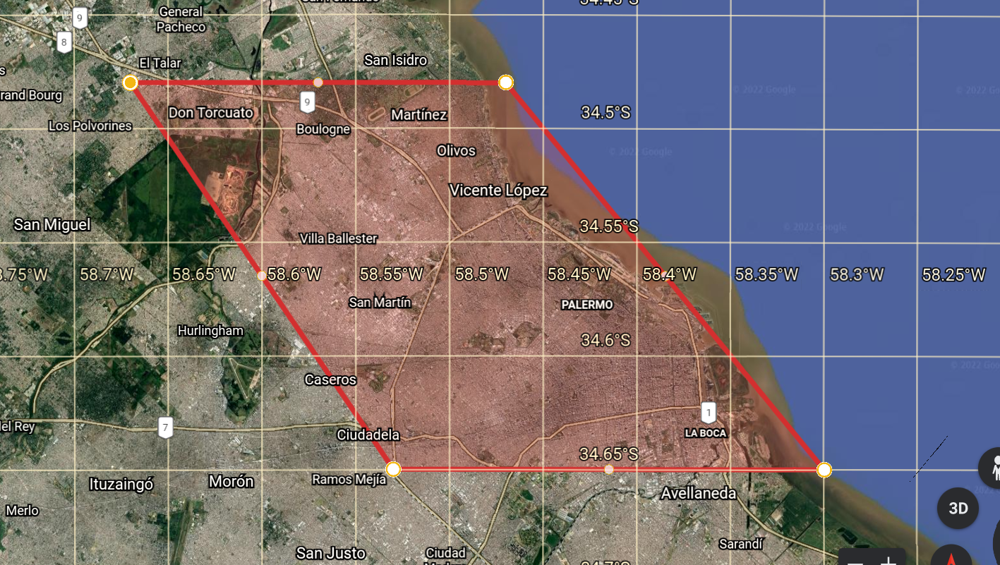

Una presentación Interactiva
La extracción de datos se llevó a cabo usando la API de MercadoLibre, enfocándose en casas y departamentos en venta. Las áreas investigadas fueron CABA y GBA, Pinamar y Mar del Plata. En total, se extrajeron aproximadamente 140.000 publicaciones.
Utilizamos gráficos de distribuciones y un poco de sentido común para detectar outliers. Al final de todo el proceso terminamos haciendo enfásis en limpiar datos que luego sirvieran para hacer buenos análisis visuales. Estos son los siguientes datos.
Estos datos también nos fueron útiles para generar modelos de Machine Learning para la predicción de precios de inmuebles.
Usamos Power BI para representar visualmente a los datos. Los siguientes gráficos son interactivos y pueden acceder a ellos desde esta página.
En CABA se concentran la mayoría de las publicaciones. La mayor parte de ellas se encuentran en los barrios: Caballito, Belgrano y Villa Urquiza.
Definitivamente Palermo Chico y Puerto Madero son los barrios mas caros de Buenos Aires.
La mayor densidad de publicaciones se encuentra en CABA. Además, muchas de ellas con más de tres ambientes son de Recoleta, Palermo y Belgrano.
La mitad de los departamentos en Mar del Plata son monoambientes.
Llevamos a cabo un Random Forest entrenado con más de 65.000 datos. Haciendo optimización de parámetros decidimos que la profundidad de las ramas sea de 30 y la cantidad de estimadores sea 60.
Con este modelo obtuvimos un R2 = 0.92 y un MSE = 28897. A partir de este modelo creamos una aplicación web que sirve para estimar el precio de una propiedad.
Pueden encontrar esta aplicación en Github o ver un video de como funciona en Youtube. Todos los códigos se encuentran en Google Drive.
{kind=link}
{kind=link}
{kind=link}